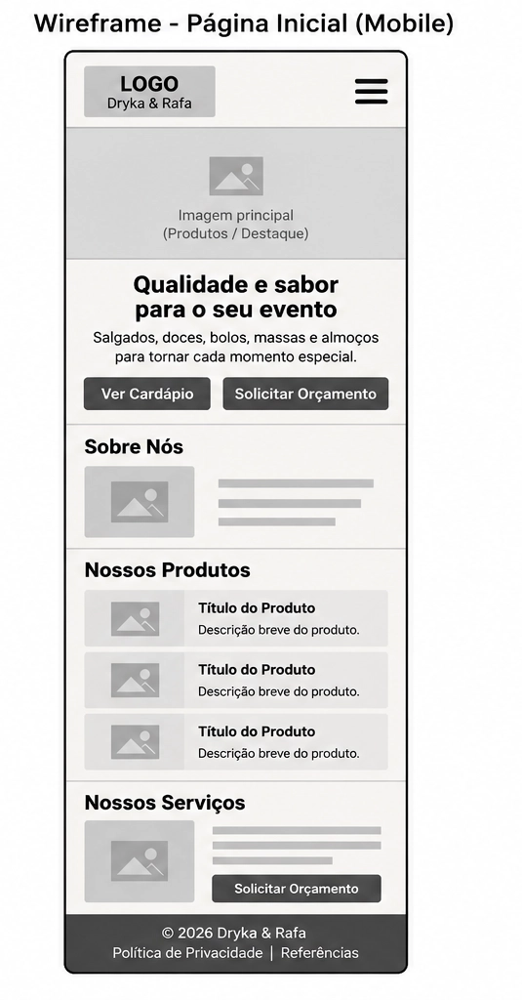
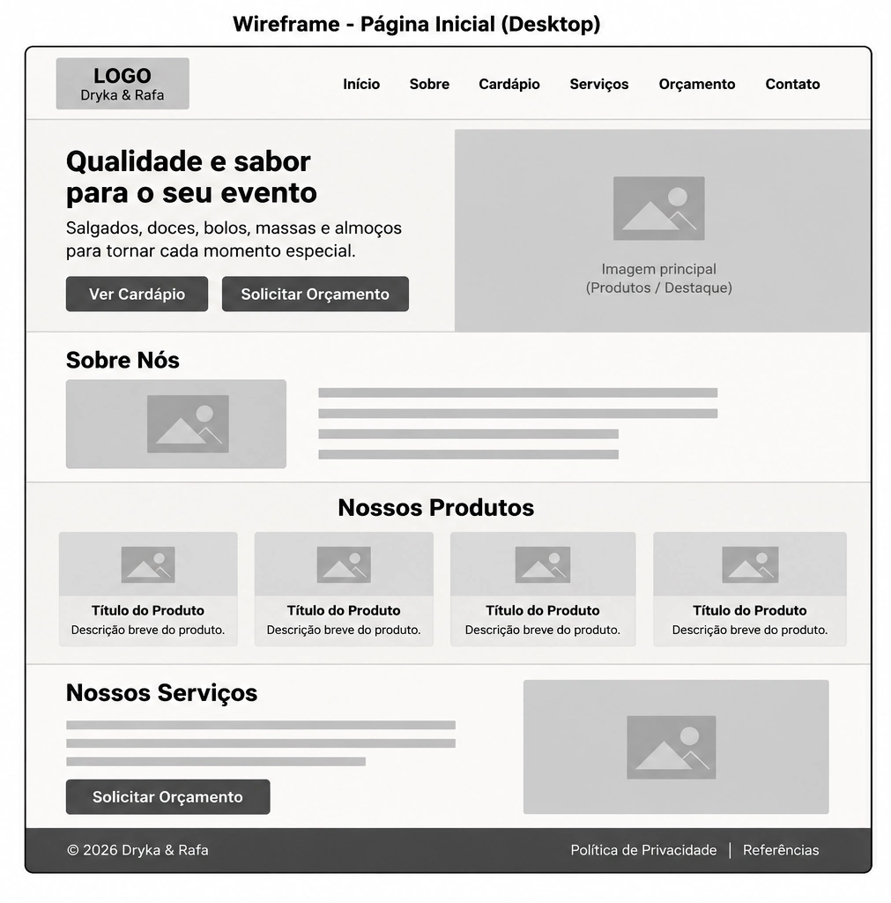

Nome do Site
Dryka & Rafa
O nome Dryka & Rafa foi escolhido por representar a marca responsável pelos produtos e serviços apresentados no site, facilitando sua identificação pelos clientes.
Finalidade do Site
O site tem como finalidade apresentar os produtos e serviços oferecidos pela Dryka & Rafa, incluindo salgados, doces e bolos, pães e massas, almoços e buffet para eventos. O site também permite consultar o cardápio, solicitar orçamento e entrar em contato com a empresa pelo WhatsApp.
Cenários
- Quais produtos e serviços a Dryka & Rafa oferece para festas e eventos?
- Como posso solicitar um orçamento para minha festa ou evento?
Esquema de Cores
As cores escolhidas foram baseadas na identidade visual utilizada no site Dryka & Rafa.
- #fffaf5: utilizada como cor de fundo principal do site.
- #362417: utilizada nos textos principais.
- #5c2c16: utilizada nos títulos e destaques.
- #d62727: utilizada nos botões e elementos de destaque.
Tipografia
A fonte escolhida para o site é Arial, com sans-serif como fonte alternativa.
- Arial: utilizada nos títulos, menus, botões, parágrafos e demais textos do site.
Wireframes
Visualização Mobile

Visualização Desktop
